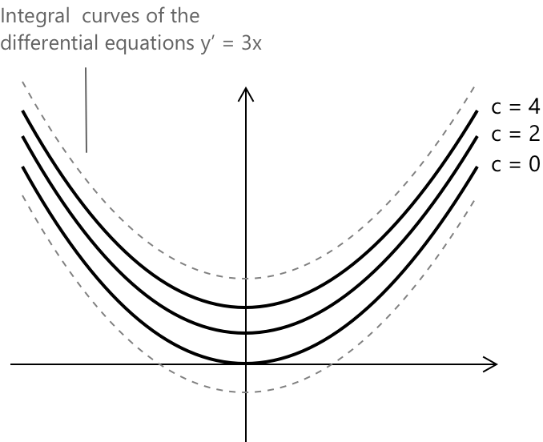
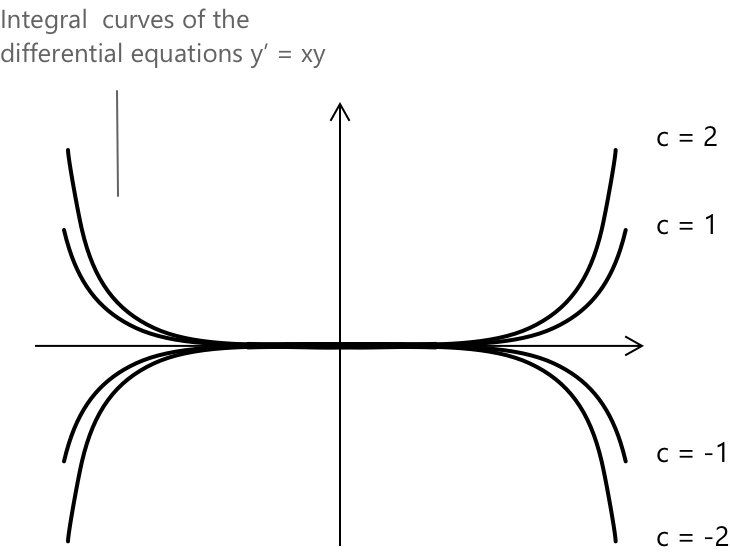

Диференціальні рівняння
Що таке диференціальні рівняння?
Звичайним диференціальним рівнянням називають зв'язок, що включає функцію \( f(x) \), визначену на проміжку \( I \subset \mathbb{R} \), разом із скінченною кількістю її похідних. Рівняння має виконуватися для всіх \( x \) на проміжку \( I \). Загальний вигляд звичайного диференціального рівняння \( n \)-го порядку має такий вигляд:
\[ F\left(x, f(x), f’(x), f’'(x), \dots, f^{(n)}(x)\right) = 0 \]
де \( F \) — задана функція, що залежить від незалежної змінної \( x \), невідомої функції \(y = f(x) \) та її похідних до \( n \)-го порядку. Прикладом диференціального рівняння є:
\[ f’(x) + x f(x) = 0 \quad \text{або} \quad y’ + x y = 0 \]
Порядок диференціального рівняння
Порядком диференціального рівняння називають порядок найвищої похідної, що з'являється в рівнянні. Наприклад, наступне диференціальне рівняння є рівнянням третього порядку, оскільки третя похідна від \( y \) є похідною найвищого порядку, що присутня в рівнянні:
\[ y’’ - 3y’ + 2y = 0 \]
Диференціальні рівняння часто вважаються складними. З цієї причини ми будемо вводити поняття поступово, з метою формування ґрунтовного розуміння методів, що використовуються для їхнього розв'язання.
Розв'язки диференціального рівняння
Загалом, диференціальне рівняння може мати безліч розв'язків. Загальним розв'язком є сімейство функцій, що залежать від \( n \) довільних сталих, де \( n \) відповідає порядку рівняння. Це сімейство включає кожен можливий розв'язок диференціального рівняння.
-
Будь-яка функція, що задовольняє диференціальне рівняння, називається розв'язком або інтегралом рівняння.
-
Окремим розв'язком диференціального рівняння є конкретна функція, отримана шляхом присвоєння конкретних значень довільним сталим у загальному розв'язку.
-
Початковими умовами є обмеження, які дозволяють нам вибрати окремий розв'язок із загального сімейства.
Форми та типи диференціальних рівнянь
Кажуть, що диференціальне рівняння має нормальну форму, якщо його можна записати як:
\[ y^{(n)} = F(x, y, \dots, y^{(n-1)}) \]
Тобто рівняння явно розв'язане відносно похідної найвищого порядку.
Диференціальне рівняння називається автономним, якщо незалежна змінна не з'являється явно в його виразі. Рівняння \(y’ = y^2 – 1\) є автономним, оскільки права частина залежить тільки від \( y \), а не від незалежної змінної \( x \).
Якщо задано диференціальне рівняння разом із множиною початкових умов, то задача знаходження розв'язку, що задовольняє і рівняння, і задані умови, називається задачею Коші. Задача Коші для диференціального рівняння першого порядку зазвичай записується як:
\[ \begin{cases} y’(x) = f(x, y(x)) \\[0.5em] y(x_0) = y_0 \end{cases} \]
де \( y’(x) = f(x, y(x)) \) — це диференціальне рівняння, а \( y(x_0) = y_0 \) — початкова умова, що визначає значення розв'язку при \( x = x_0 \).
Як розв'язувати прості диференціальні рівняння
Почнемо з розв'язання дуже простих диференціальних рівнянь, зокрема рівнянь першого порядку вигляду \( y’ = f(x) \). У цьому випадку розв'язок отримують шляхом інтегрування обох частин рівняння, що дає:
\[\int y’ \, dx = \int f(x) \, dx \]
Для такого типу рівнянь загальний розв'язок має вигляд:
\[ y(x) = \int f(x) \,dx + c \]
де \( c \in \mathbb{R} \) — довільна стала.
Приклад 1
Розв'яжемо диференціальне рівняння:
\[ y’ – 3x = 0 \]
Перепишемо його у стандартній формі та проінтегруємо обидві частини:
\[ y’ = 3x \]
\[ \int y’ \,dx = \int 3x \, dx \rightarrow y(x) = \frac{3}{2}x^2 + c \]
Розв'язки представлені інтегральними кривими, заданими рівнянням:
\[y(x) = \frac{3}{2}x^2 + c\]

Кожна крива представляє окремий розв'язок загальної форми. Значення \( C \) визначає вертикальне положення (вертикальний зсув) кривої. Усі криві мають однакову параболічну форму, відкриту вгору, але вони зміщені по вертикалі залежно від значення \( C \). Разом це сімейство кривих представляє повну множину розв'язків диференціального рівняння.
Розв'язання:
\[y(x) = \frac{3}{2}x^2 + c\]
Диференціальні рівняння з відокремлюваними змінними
Диференціальне рівняння першого порядку називається рівнянням з відокремлюваними змінними, якщо його можна переписати у вигляді:
\[ y’ = a(x) b(y) \]
Щоб знайти загальний інтеграл такого типу рівняння, ми почнемо з ділення обох частин рівняння на \( b(y) \). Отримаємо:
\[ \frac{y’}{b(y)} = a(x) \]
Потім ми інтегруємо обидві частини відносно \( x \), отримуючи:
\[ \int \frac{y(x)’}{b(y(x))}\, dx = \int a(x) \, dx + c \]
Замінивши \( y = y(x) \), отримаємо:
\[ \int \frac{dy}{b(y)}\, dx = \int a(x) \, dx + c \]
Приклад 2
Розв'яжемо диференціальне рівняння:
\[y’ = xy\]
Маємо диференціальне рівняння з відокремлюваними змінними. Перенесемо всі члени, що містять \( y \), в один бік, а ті, що містять \( x \), — в інший:
\[ \frac{1}{y} \, dy = x \, dx \]
Інтегруємо обидві частини та отримуємо:
\[ \int \frac{1}{y} \, dy = \int x \, dx \]
\[ \ln |y| = \frac{x^2}{2} + c \]
Для повного огляду правил інтегрування та поширених інтегралів див. відповідний розділ за цією темою.
Щоб виділити \( y \), позбудемося логарифма, піднісши обидві частини до степеня:
\[ |y| = e^{\frac{x^2}{2} + c} = e^c \cdot e^{\frac{x^2}{2}} = c e^{\frac{x^2}{2}} \]
де \( c \) — стала, що представляє \( e^c \).
Оскільки \( c \) є довільною сталою в \( \mathbb{R} \), яка може бути як додатною, так і від'ємною, ми можемо записати загальний розв'язок рівняння як:
\[ y(x) = c e^{\frac{x^2}{2}}, \quad c \in \mathbb{R} \]
Розв'язки представлені наступними інтегральними кривими:

Отже, загальний розв'язок:
\[ y(x) = c e^{\frac{x^2}{2}}, \quad c \in \mathbb{R} \]
Глосарій
-
Звичайна диференціальна рівняння: співвідношення, що пов'язує функцію, визначену на проміжку, та скінченну кількість її похідних, яке виконується в усіх точках цього проміжку.
-
Порядок диференціального рівняння: порядок найвищої похідної, що міститься в рівнянні.
-
Загальний розв'язок: сімейство функцій, що задовольняють диференціальне рівняння і містять довільні сталі, кількість яких дорівнює порядку рівняння.
-
Частковий розв'язок: конкретна функція, отримана із загального розв'язку шляхом присвоєння конкретних значень довільним сталам.
-
Початкові умови: умови, що визначають значення розв'язку та, можливо, його похідних у певній точці, які використовуються для визначення єдиного часткового розв'язку.
-
Задача Коші: завдання знайти розв'язок диференціального рівняння, що задовольняє задані початкові умови, зазвичай виражені як: \[ y(x_0) = y_0,\quad y’(x_0) = y_1, \ldots \]
-
Інтегральні криві: графіки розв'язків диференціального рівняння, що відображають розвиток функції на площині.